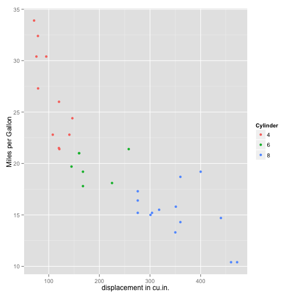

Pitch for my first Shiny App
the world has been waiting for this!
Dirk Mischke
what can I say, still student
A new experience awaits you - Explore Car feature relationships!
Would you like to be able to do this...

Background:
The famous magazine 'Motortrend' collected the data of a variety of cars.
For this application we were able to secure the information for 32 automobiles, all the most recent models from the years 1973 to 1974.
This is the list of cars included for our application:
[1] "Mazda RX4" "Mazda RX4 Wag" "Datsun 710"
[4] "Hornet 4 Drive" "Hornet Sportabout" "Valiant"
[7] "Duster 360" "Merc 240D" "Merc 230"
[10] "Merc 280" "Merc 280C" "Merc 450SE"
[13] "Merc 450SL" "Merc 450SLC" "Cadillac Fleetwood"
[16] "Lincoln Continental" "Chrysler Imperial" "Fiat 128"
[19] "Honda Civic" "Toyota Corolla" "Toyota Corona"
[22] "Dodge Challenger" "AMC Javelin" "Camaro Z28"
[25] "Pontiac Firebird" "Fiat X1-9" "Porsche 914-2"
[28] "Lotus Europa" "Ford Pantera L" "Ferrari Dino"
[31] "Maserati Bora" "Volvo 142E"
Go where the action is!
This is where you can take control